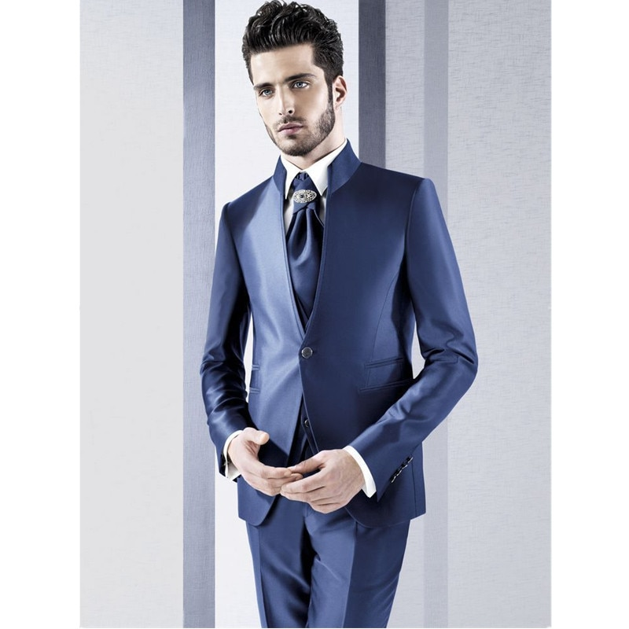
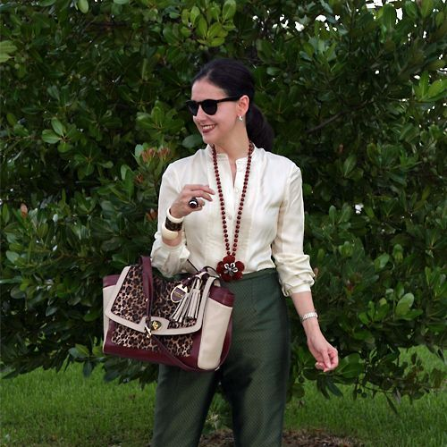

Gabriela García
- 20 years.
- Medical Student.
- "I would describe myself as a quiet person who
likes to listen to music and spend time outdoors with my friends to relax"
- Dedicated.
- Bad at math.
- Good dancer.
- She likes to set up multiple alarms to organize her day

Jonathan Oliveira
- 27 years.
- Lawyer.
- "I am a person who is completely dedicated
to work during the week but on weekends
I like to go out and have fun with my friends"
- He is good creating atmosphere at parties.
- Good in interpersonal relationships.
- He does not like the party to end because of
lack of good music.
- He likes to drink coffee every morning and likes to check his messages frequently

Carolina Ledesma
- 41 years.
- Hotel Manager.
- "I consider myself a loving, patient and
responsible person who loves to spend quality
time with the family"
- She likes to play board games with his children
while listening to music.
- She is tired of having to change the AC and hates to connect her device to different bluetooth
speakers becasue seh can't hear from that far.
Salvador Fernández
- 53 years
- French teacher in high school.
- "My students say that I am a fun person who
is always willing to help and who is committed
to education"
- To give his class he usually needs something to play audios.
- He isn't very fond of working with a lot of new technologies because he forgets all the commands,
he would like a way to make his classes dynamic but easy